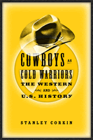

<body bgcolor="#FFFFFF" text="#000000" link="#0000FF" vlink="#CC0000" alink="#CC0000"><center><hr width="350" size="1" align="center" noshade>The classic westerns read as fables<hr width="350" size="1" align="center" noshade><p><a href="https://cdcshoppingcart.uchicago.edu/Cart/ChicagoBook.aspx?ISBN=9781592132539&&PRESS=temple" target="_top">Buy this book!</a> | <a href="https://cdcshoppingcart.uchicago.edu/Cart/Cart.aspx?PRESS=temple" target="_top">View Cart</a> | <a href="https://cdcshoppingcart.uchicago.edu/Cart/Cart.aspx?PRESS=temple" target="_top">Check Out</a></p><p></p></center><!--none//--><h1>Cowboys as Cold Warriors</h1>
<H2>The Western and U.S. History</H2>
<h3>Stanley Corkin</h3>
<P>cloth 1-59213-253-7 $80.50, Jun 04, <FONT COLOR=#990033>Available</FONT>
<br>paper 1-59213-254-5 $30.95, Jun 04, <FONT COLOR=#990033>Available</FONT>
<br>Electronic Book 1-43990-568-1 $30.95 <FONT COLOR=#990033>Available</FONT>
<BR> 288 pp
6x9
7&nbsp;halftones
</P><BLOCKQUOTE><I>"Stanley Corkin brings a shrewd eye and a keen historical consciousness to this perceptive examination of the Hollywood Western in its glory days, exploring how these iconic films subtly addressed the global realignments, domestic tensions, and gender issues of the early Cold War era. Not only film buffs but everyone interested in mid-20th century U.S. politics and culture will enjoy and profit from this book."</i>
<br>&#151<b>Paul Boyer</b>, author of <i>By the Bomb's Early Light: American Thought and Culture at the Dawn of the Atomic Age</i><i></I></BLOCKQUOTE>
<p>Though the United States emerged from World War II with superpower status and quickly entered a period of economic prosperity, the stresses and contradictions of the Cold War nevertheless cast a shadow over American life. The same period marked the heyday of the western film. <i>Cowboys as Cold Warriors</i> shows that this was no coincidence. It examines many of the significant westerns released between 1946 and 1962, analyzing how they responded to and influenced the cultural climate of the country.
<p>Author Stanley Corkin discusses a dozen films in detail, connecting them to each other and to numerous others. He considers how these cultural productions both embellished the myth of the American frontier and reflected the era in which they were made.
<p>Films discussed include: <i>My Darling Clementine, Red River, Duel in the Sun, Pursued, Fort Apache, Broken Arrow, The Gunfighter, High Noon, Shane, The Searchers, Gunfight at the OK Corral, The Magnificent Seven, The Alamo, Lonely Are the Brave, Ride the High Country,</i> and <i>The Man Who Shot Liberty Valance</i>.
<BR>&nbsp;<h2>Excerpt</h2><P>Excerpt available at <a href="http://www.temple.edu/tempress">www.temple.edu/tempress</a></p>
<BR>&nbsp;<h2>Reviews</h2>
<p><i>"</i>Cowboys as Cold Warriors<i> takes the reader on a galloping ride through the Western as meta-mythology. Corkin treats the films as the mapping of the American empire in the past, and a powerful metaphor for asserting its essential </i>raison d'etre<i>."</i>
<br>&#151<b>Lloyd Gardner</b>, Rutgers University
<p><i>"[O]ne must admire Mr. Corkin for his years-long struggle to show...that there is more to these movies than meets the eye of the casual viewer."</i>
<br>&#151<b><i>The Washington Times</i></b>
<p><i>"Highly recommended."</i>
<br>&#151<b><i>Choice</i></b>
<p><i>"What makes Corkin's work unique is his focus on sixteen American films made between 1946 and 1962 and his argument that the evolution of the western genre during this period closely paralleled, influenced, and was influenced by changing official and popular American attitudes toward the cold war. Some of Corkin's insights are persuasive..."</i>
<br>&#151<b><i>History</i></b>
<p><i>"Corkin's analysis is invariably thought-provoking, especially in its close ties to political developments in mid-twentieth-century American culture.... He hits the targets he has aimed at and, in doing so, he has produced a book which should prove enlightening to both Western film enthusiasts and American history scholars of every stripe."</i>
<br>&#151<b><i>Film International</i></b>
<p><i>"Corkin's book is valuable for the thoroughgoing way in which it links the discussion of cultural themes and productions with political developments."</i>
<br>&#151;<b><i>Film Quarterly</i></b>
<p><i>"Corkin's book is always interesting. Its lasting value lies in situating underinvestigated materials in a provocative framework that yields new insights into debates surrounding the work of Cold War cultural production."</i>
<br>&#151;<b><i>American Literature</i></b>
<p><i>"Corkin is very well informed on the shifts in American foreign policy...and his discussion of the films is never less than illuminating."</i>
<br>&#151;<b><i>Film Studies</i></b>
<p>"Cowboys as Cold Warriors<i> is a perceptive account of the connections between Westerns and foreign policy issues in the United States in the half-century following World War II...[It] is a fascinating analysis of the Hollywood Western in its heyday. Because the films discussed in the book played such a salient role in American culture during the Cold War, Corkin sheds crucial light on the political context in which issue of economy and empire loomed so large in the latter half of the twentieth century."</i>
<br>&#151<b><i>The Journal of Cold War Studies</i></b>
<p><i>"Corkin’s exegesis of the Cold War movie Western is thoughtfully grounded in a critique of empire based upon broad scholarship in culture, gender and foreign policy....His interpretation is plausible; the meanings he asserts can be drawn from the narratives he describes."</i>
<br>&#151<b><i>American Historical Review</i></b>
<BR>&nbsp;<h2>Contents</h2><P>
<p>Acknowledgments
<br>Introduction: Westerns, U.S. History, and the Cold War
<br>1. Cowboys, Free Markets, Wyatt Earp, and Thomas Dunson: <i>My Darling Clementine</i> and <i>Red River</i>
<br>2. Melodrama and the Feminine Means to Empire: <i>Duel in the Sun</i>, <i>Pursued</i>, and <i>Fort Apache</i>
<br>3. Cold War Westerns and the Law of the Gun: <i>Broken Arrow</i> and <i>The Gunfighter</i>
<br>4. Korea, Containment, and Nationalism: <i>High Noon</i>, <i>Shane</i>, and <i>The Searchers</i>
<br>5. Modernization Theory, Political Discord, and Intervention: <i>Gunfight at the OK Corral</i>, <i>The Magnificent Seven</i>, and <i>The Alamo</i>
<br>6. Imperialist Nostalgia and the Road to Vietnam: <i>Lonely Are the Brave</i>, <i>Ride the High Country</i>, and <i>The Man Who Shot Liberty Valance</i>
<br>Notes
<br>Bibliography
<br>Index
</P><BR>&nbsp;<H2>About the Author(s)</H2>
<table><tr><td valign="top"><img src="/tempress/authors/1337_au.gif" height="90" width="75"></td><td width="100%" valign="middle"><p><b>Stanley Corkin</b> is Professor of English at the University of Cincinnati and author of <i>Realism and the Birth of the Modern U.S.</i></P></td></tr></table>
<BR><H2>Subject Categories</H2>
<p><A HREF="/tempress/american.html" TARGET="_top">American Studies</a>
<BR><A HREF="/tempress/cinema.html" TARGET="_top">Cinema Studies</a>
<BR><A HREF="/tempress/history.html" TARGET="_top">History</a>
</p>
<BR><h2 class="inpageheading">In the series</H2>
<P><I><a href="http://www.temple.edu/tempress/culture.html" onMouseOver="window.status='Click for other books in this series!'; return true;" onMouseOut="window.status=''; return true;" target="_top">Culture and the Moving Image</a></i>, edited by Robert Sklar.
</p><p>The <I>Culture and the Moving Image</I> series, edited by Robert Sklar, seeks to publish innovative scholarship and criticism on cinema, television, and the culture of the moving image. The series will emphasize works that view these media in their broad cultural and social frameworks. Its themes will include a global perspective on the world-wide production of images; the links between film, television, and video art; a concern with issues of race, class, and gender; and an engagement with the growing convergence of history and theory in moving image studies.</p>
<p align="center"><a href="https://cdcshoppingcart.uchicago.edu/Cart/ChicagoBook.aspx?ISBN=9781592132539&&PRESS=temple" target="_top">Buy this book!</a> | <a href="https://cdcshoppingcart.uchicago.edu/Cart/Cart.aspx?PRESS=temple" target="_top">View Cart</a> | <a href="https://cdcshoppingcart.uchicago.edu/Cart/Cart.aspx?PRESS=temple" target="_top">Check Out</a></p><p><font face="Arial" size="1"><a href="copyright.html" onMouseOver="window.status='Web Copyright Policy';return true;" onMouseOut="window.status=''" title="Web Copyright Policy">&copy;</a> 2015 <a href="http://www.temple.edu" target="new" onMouseOver="window.status='Link to Temple University home page';return true;" onMouseOut="window.status=''" title="Link to Temple University home page">Temple University</a>. All Rights Reserved. http://www.temple.edu/tempress/titles/1337_reg.html</font></p>